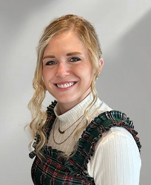

Hey it's me, Hope! I love every avenue of creativity I can find in this beautiful world.
In middle school my grandma noticed my affinity for the arts and started giving me lessons in painting. We made oil paintings together and I will always cherish this time together and the technical foundation it gave me as an artist.
Fast forward to college and I was faced with having to choose a major. I tried out a few, but ultimately came to choose Art. Choosing Art as a major was a leap of faith as there's no clear roadmap for where that leads. I loved taking every art course I could get my hands on and ended up with a triple emphasis major consisting of graphic design, fine arts, and art history.
Throughout my time as a student in both high school and college, I had the opportunity to create a wide range of art to grow my skillset. I explored oil, acrylic, and watercolor painting as well as drawing, sculpture, photography, and web design.
I’ve always loved creating art for fun, but I also wanted to build a career from it. After graduating from college, I started as an Art Director Intern at Staples Promotional Products. From there, I worked my way up to Associate Art Director, then Art Director, and now Senior Art Director. I've been able to flex my creative muscles in this space and grow as an artist in marketing, communication, and web design.
I enjoy a few freelance projects as they come - poster and program design, cookie art, and custom paintings. I also create paintings of special family memories.
During the summer of 2024, I took on my biggest side project yet and illustrated a children's book! This was a wonderful project to both sharpen my skills and push me in new ways. Now, what to make next?